Cultivo de
Marihuana
[ cultivo + aprendizaje ][ www.cultivodemarihuana.com ]
Tabla de Contenidos
Estás aquí porque quieres aprender a cultivar marihuana en interiores y estás interesado en una "clase en línea" gratuita sobre cómo cultivar marihuana. A pesar de lo que hayas escuchado, cultivar tu propia cannabis en realidad es bastante fácil una vez que tengas la información correcta. Cualquier persona con la voluntad de cultivar, unos pocos minutos extra cada día y un espacio de cultivo ya tiene lo necesario para cultivar su propia cannabis.
¿Que necesito para arrancar?Antes de empezar a cultivar, es necesario que entiendas las leyes de tu localidad.
El cannabis es una hierba silvestre que se adapta a muchos climas. Las plantas de cannabis pueden ser realmente fáciles de cultivar si tienes la información correcta y sabes qué hacer. Puede parecer imposible comenzar si es la primera vez que lo cultivas, pero este sitio web te guiará en todo.
Después de comenzar a cultivar, generalmente se necesitan al menos 3 meses hasta la cosecha para la mayoría de las cepas (algunas tardan un poco menos, otras más, y también tomará más tiempo si cultivas plantas grandes). Después de la cosecha, tus cogollos de cannabis tardarán alrededor de una semana en secarse. Por último, para obtener la mejor calidad, la mayoría de los cultivadores querrán curar su cogollo durante 2 semanas o más para obtener un sabor más suave y una potencia percibida más alta. Después de ser curados durante 2-4 semanas, los cogollos se sentirán más fuertes y serán menos propensos a causar dolores de cabeza o ansiedad.
Las plantas de cannabis son hierbas con necesidades simples. Tus plantas de cannabis crecerán siempre y cuando les proporciones la cantidad adecuada de los siguientes recursos...
Ya sea que cultives plantas de marihuana en interiores o exteriores, deberás asegurarte de que reciban la cantidad adecuada de estos seis recursos. ¡Serás recompensado con grandes cogollos!
¿Cual es el error mas comun en cultivadores nuevos ? La falta de busqueda
Uno de los errores más comunes que cometen los nuevos cultivadores de cannabis es realizar experimentos improvisados y dañar o incluso matar sus plantas.
Siempre debes hacer al menos una rápida búsqueda en Google antes de intentar cualquier técnica nueva. ¿Por qué hacer que tus plantas sean los conejillos de indias de un experimento que alguien más ya ha probado antes?
Por ejemplo, puede parecer una buena idea darle a tus plantas de cannabis en crecimiento nutrientes Miracle-Gro porque son fáciles de conseguir y baratos, o plantar tus semillas en la tierra de Miracle-Gro que tengas en casa. Desafortunadamente, la fórmula estándar de Miracle-Gro no contiene la proporción correcta de nutrientes para el cannabis, especialmente durante la etapa de floración. El uso de nutrientes originales de Miracle-Gro durante la floración puede dañar tus plantas y reducir tus rendimientos.
Pero, ¿cómo podrías saberlo a menos que lo busques primero?
No quieres perder toda tu cosecha por algo que ya se ha intentado antes y se ha demostrado que no funciona, así que asegúrate de investigar un poco y experimentar con precaución y moderación.
Otro problema común que tienen los nuevos cultivadores es la tendencia a omitir pasos importantes como mantener un pH adecuado o conseguir el tipo correcto de nutrientes. Aunque es posible tener suerte y tener éxito en el cultivo de cannabis sin tomar estas medidas, es mucho más probable que tus plantas mueran o simplemente nunca produzcan cogollos.
En realidad, puede ser muy fácil cultivar marihuana con la información adecuada. Es como cultivar cualquier otra planta. Sigue un conjunto de pasos comprobados y, antes de que te des cuenta, estarás cosechando tus primeros cogollos.
Comienza leyendo esta sencilla guía de cultivo de cannabis y pronto tendrás todo el conocimiento que necesitas para empezar a producir tus propios cogollos potentes ¡hoy mismo!
Necesidades de Luz (El cannabis necesita más luz que la mayoría de las plantas de interior)
Muchos cultivadores de cannabis prefieren cultivar al aire libre. Los cultivadores al aire libre necesitan un espacio accesible y privado que reciba 8+ horas de luz solar directa al día para obtener los mejores resultados.
Los cultivadores al aire libre necesitan 8+ horas de luz solar directa al día Plante en primavera, coseche en otoño.
Las plantas de cannabis crecen muy rápido en poco tiempo y necesitan mucha energía de la luz para crecer y producir cogollos. En la naturaleza, una planta de cannabis puede crecer hasta el tamaño de un árbol en menos de un año, y usa la energía de la luz para alimentar ese crecimiento.
A muchos nuevos cultivadores que quieren cultivar en interiores les gusta la idea de cultivar su planta de cannabis en una ventana soleada, como una planta de interior. Por lo general, la luz de una ventana no será suficiente. Si bien las plantas de cannabis jóvenes parecen poder crecer en ventanas brillantes y soleadas, por lo general no producirán más que unos pocos pelos delicados durante la etapa de floración, y pueden no producir ningún cogollo en absoluto. Sin flores / cogollos, estás sin suerte.
Los cultivadores de interiores casi siempre necesitan luces de cultivo para obtener cogollos
En interiores, casi todos los cultivadores necesitarán algún tipo de luz de cultivo para el cultivo exitoso de cannabis.
Los cultivadores de interior generalmente colocan sus luces de cultivo con un temporizador para simular el sol. Esto hace que sea fácil encender y apagar las luces para cada "día", por lo que las luces de cultivo son más automatizadas. Hay muchas luces de cultivo de diferentes tamaños, desde las bombillas CFL que ya usa en su casa hasta luces de cultivo más grandes y especializadas que producen libras de cogollos a la vez.
Hay opciones de cultivo en interiores para casi todos, incluso si tiene un presupuesto limitado o solo tiene un espacio pequeño para trabajar, ya sea que desee cultivar en un cubo o en toda una habitación.
Solo hay dos estaciones de vida en la planta de cannabis...
Las plantas de cannabis siguen creciendo cada vez más con días largos, y comienzan a producir cogollos cuando tienen noches largas.
Aquí está el ciclo de vida de la marihuana en la naturaleza...
¿Por que es esto importante?
Las plantas de cannabis van desde la semilla hasta la muerte en tan solo un año, y tienen un cierto orden para sus etapas de vida. Esto es muy importante que lo entiendas como cultivador.
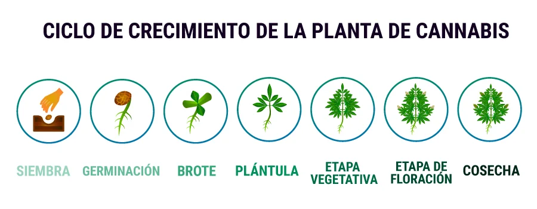Una planta seguirá creciendo vegetativamente (solo tallos y hojas) mientras la planta "crea" que es principios de primavera o verano. En exteriores esto ocurre de forma natural a medida que cambian las estaciones. En interiores, los cultivadores colocan las luces de cultivo en un temporizador para "indicarle" a la planta cuándo comenzar a florecer.
¡Parece simple, y lo es! Solo recuerda que hay dos etapas de vida para el cannabis, primero la etapa vegetativa y luego la etapa de floración (que es seguida por la cosecha).
Plantas de Cannabis : Macho & Hembra
Las plantas de cannabis tienen género. Cada planta se convierte en una planta "macho" o "hembra". Aunque alrededor de la mitad de las plantas son macho o hembra, solo las plantas hembra de cannabis producen cogollos. Eliminar las plantas de cannabis macho también evita la polinización (y las semillas).
La mayoria de los cultivadores, solo estan interesados en la Hembra, ya que es la que produce las flores o "cogollos"
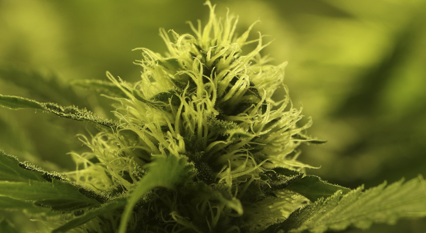Las plantas de cannabis muestran su género al final de la etapa vegetativa o al comienzo de la etapa de floración.
Las plantas de cannabis macho solo producen sacos de polen, no cogollos, y pocos machos producen una cantidad significativa de THC u otros cannabinoides.
Vale la pena repetirlo. Las plantas macho de cannabis no producen cogollos con THC. La mayoría de los cultivadores los desechan al verlos.
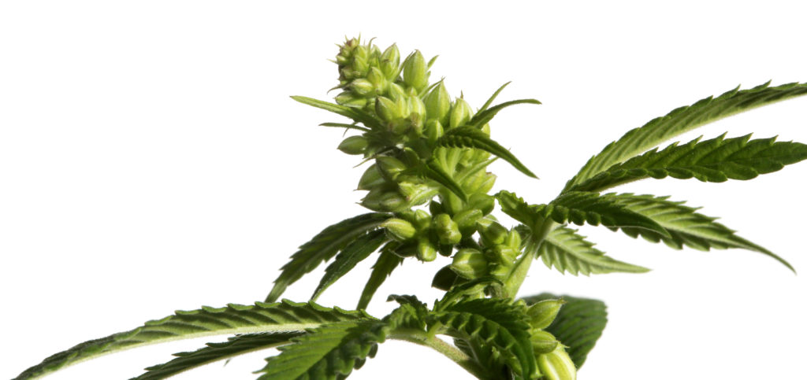No hay manera de determinar el género de una planta al principio, solo mirando las semillas, o incluso mirando plantas jóvenes.
Tanto las plantas de cannabis macho como las hembras se ven exactamente iguales hasta que comienzan a florecer. Solía haber mitos y trucos sobre cómo distinguir las plantas macho de las hembras desde una edad temprana, pero ninguno funciona en un 100% del tiempo. Hasta el día de hoy, incluso los científicos no están exactamente seguros de qué hace que algunas plantas se conviertan en macho y otras en hembras.
Para la mayoría de los cultivadores, deberás identificar el género de tus plantas lo antes posible y eliminar cualquier macho rápidamente, antes de que contaminen a tus plantas hembra.
Cómo obtener semillas o clones - Elegir la cepa adecuada
Las dos formas más populares de obtener semillas o clones de cannabis son en persona o a través de bancos de semillas en línea.
Si quieres reducir la incertidumbre y asegurarte de cultivar cannabis de alta calidad siempre, necesitas empezar con grandes genes.
Al igual que con los animales, la forma en que crecen tus plantas de cannabis tendrá mucho que ver con la genética con la que comenzaron su vida. Cada planta de cannabis es una mezcla de los rasgos de sus dos progenitores.
Este hermoso cogollo de cannabis cubierto de escarcha es un ejemplo de lo que puedes cultivar siguiendo este tutorial. Debido a que la genética tiene un gran impacto en tus resultados, es importante saber un poco sobre la genética de la planta con la que estás trabajando.
Existen tres principales tipos de cepas o variedades de cannabis: indica, sativa y cepas híbridas (las cepas híbridas son una mezcla de indica y sativa).
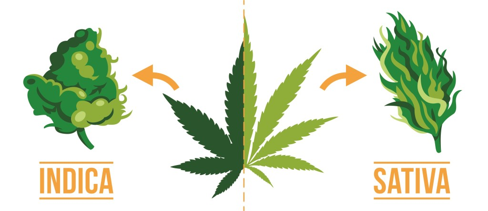Estos tipos no están escritos en piedra. Casi todas las cepas de cannabis con las que te encuentres serán alguna especie de híbrido. Algunas cepas se inclinan más hacia indica, otras hacia sativa. Algunas son una clase por sí mismas. He escuchado a algunas personas considerar que "Haze" es un tipo de cepa, aunque a veces se considera parte de la familia "Sativa".
También existe otro tipo muy importante de cannabis: las cepas "Ruderalis" o "auto-floración".
Déjame explicar...
Cepas Indica, Sativa y Híbridas (más Auto-floración)
Indica : Las cepas Indica tienden a causar más efectos corporales y suelen crecer más cortas y frondosas.
Sativa : Las cepas Sativa tienden a causar más efectos cerebrales o mentales. Las Sativas crecen más grandes, requieren más luz y tardan más en madurar que las plantas indica, por lo que una cepa Sativa de cannabis puede necesitar un entrenamiento especial de la planta para adaptarse al cultivo en interiores. Las Sativas suelen tener hojas delgadas y con forma de dedos, mientras que las indicas tienen hojas más gordas y redondas.
Hibrido : A menudo es más sencillo cultivar plantas de marihuana que sean una cepa híbrida, ya que han sido criadas para llevar los mejores rasgos de ambas, indica y sativa.
Cepas auto-floración o "Ruderalis" : Auto-floración significa que estas cepas comenzarán a florecer sin importar su programación de luz. Estas cepas suelen ser una famosa variedad que ha sido criada para llevar la característica "auto-floración". Cuando se cultiva con cepas de cannabis basadas en Ruderalis, como la Lowryder, puedes dar a la planta hasta 18 horas de luz al día durante todo el cultivo, y tu planta estará lista para cosechar en unos 3 meses.Debido a su corto ciclo de vida, su altura no suele ser mas de 1,50 mts.
Si estás investigando qué variedad de cannabis cultivar, presta atención a los requisitos de luz, tiempos de crecimiento, etc., para asegurarte de que sea una buena combinación para tu área de cultivo.
Semillas
Las semillas son una buena manera para muchas personas de comenzar a cultivar ya que pueden comprarse fácilmente en internet y entregarse discretamente en casi cualquier lugar del mundo.
Las semillas de cannabis viables suelen ser duras y de color oscuro. Si tienes semillas de cannabis que son pequeñas y blancas, a menudo están inmaduras y no germinarán.
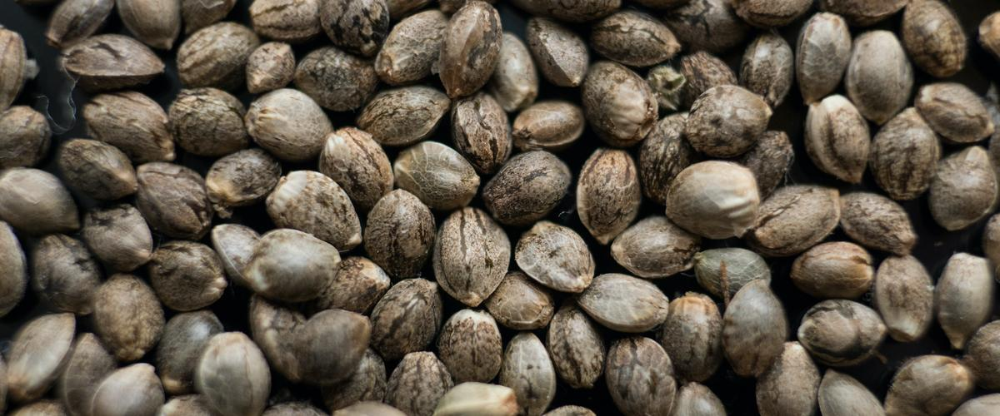Semillas viables de cannabis, ¡así es como lucen las semillas de marihuana!
Las semillas saludables se pueden almacenar en el refrigerador hasta que estés listo para usarlas, pero no se recomienda que las congeles. Las semillas que se mantienen en un lugar fresco, seco y alejado de la luz seguirán siendo viables durante cinco años o incluso más.
A veces, encontrarás buenas semillas en la marihuana que has comprado (estas semillas se llaman "bagseed") que definitivamente se pueden usar para comenzar a cultivar.
La desventaja de usar semillas que encuentras en la marihuana que compraste a tu distribuidor local es que aproximadamente la mitad de las semillas terminarán siendo macho, y solo la mitad serán hembras. Tampoco sabes qué esperar en cuanto a cómo la planta tenderá a crecer.
Aún así, muchos cultivadores también comienzan a cultivar cannabis con bagseed que han recolectado. Esta es una excelente manera de comenzar a cultivar, y muchos cultivadores han llegado felizmente a la cosecha con bagseed.
Algunos cultivadores tienen mucha suerte con las bagseed y obtienen excelentes resultados. Pero a veces los cultivadores terminan cultivando cogollos que no se parecen en nada a los que se encontraron las semillas.
¿Ya tienes tus semillas? Comienza a germinar tus semillas de cannabis.
¡Siempre que sea posible, obtén una variedad confiable para obtener los mejores resultados!
En realidad, es seguro y confiable comprar tus semillas de marihuana en línea de una fuente de semillas reputada. El mayor problema para los residentes de los Estados Unidos que ordenan en línea es el tiempo de espera prolongado, ya que casi todas las fuentes de semillas de cannabis están ubicadas en el extranjero. He tenido semillas que tardan un mes o más en pasar por la aduana y llegar a mi puerta. Sin embargo, siempre y cuando elijas obtener la entrega garantizada de tu fuente de semillas, sabrás que eventualmente llegarán, incluso si tarda el doble de lo esperado.
ClonesEste es un ejemplo de un clon de cannabis que ha desarrollado raíces. Los clones son una copia exacta de otra planta. Al comenzar con un clon, se puede esperar que la planta crezca y produzca cogollos de manera muy similar a la planta madre de la que proviene. Esto puede ser útil para los cultivadores porque saben exactamente qué esperar.
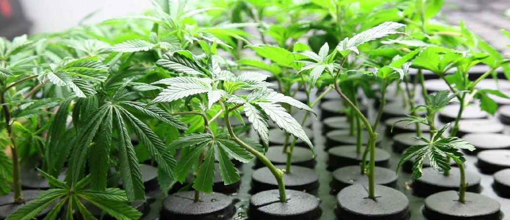Para obtener clones de cannabis, necesitarás conocer a alguien que ya tenga plantas de cannabis. Hasta donde yo sé, no hay manera de ordenar clones de cannabis en línea de manera consistente. La única forma de obtener plantas de cannabis en línea es mediante la orden de semillas.
Es posible que pueda comprar clones de cannabis en su dispensario local de marihuana medicinal si tiene una recomendación de marihuana de su médico en un estado médico. Desafortunadamente, esta opción no está disponible para muchos cultivadores nuevos. Una de las grandes ventajas de comenzar con semillas es que cualquiera puede hacerlo.
Comenzar con un clon de cannabis puede ahorrarle un par de semanas a un mes en comparación con comenzar con semillas porque tienen una ventaja inicial en el crecimiento.
Usar clones en lugar de semillas regulares garantiza el género de su planta de marihuana porque los clones tienen la misma genética que su planta madre, incluido el género.
Si ya tienes plantas femeninas, puedes clonarlas para hacer más plantas (copias) sin tener que preocuparte nunca por el sexo de tus plantas o crear semillas.
Si estás comenzando con un clon, es importante tratarlo con cuidado durante los primeros uno o dos días. Si tu clon aún no ha desarrollado raíces, es importante asegurarte de mantenerlo húmedo y recibir luz suave (como la de los tubos fluorescentes) hasta que desarrolle raíces.
Los nuevos clones de cannabis prefieren condiciones cálidas y húmedas. Piensa en la primavera.
Antes de que tus clones desarrollen raíces, necesitan obtener agua a través de sus hojas. Un clonador húmedo es ideal para que los clones enraícen, o puedes rociar tus plantas varias veces al día hasta que comiencen a formar raíces. Algunos cultivadores utilizan una almohadilla térmica debajo de sus clones para mantener el calor. Una temperatura un poco más alta que la ambiente, entre 72-77 °F (22-25 °C), es perfecta. Muchos clonadores automáticos vienen con una configuración de calefacción.
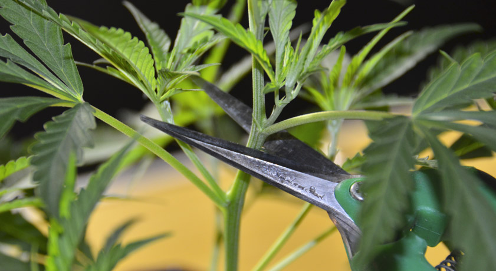Si tu clon ya ha establecido sus raíces, entonces puedes ponerlo en su nuevo hogar con tus luces de cultivo un poco más lejos de lo normal.
Solo dale un poquito de agua al principio con una solución de nutrientes altamente diluida o sin nutrientes. Es tentador querer poner las luces cerca del nuevo bebé y darle nutrientes porque quieres hacer todo lo posible para asegurarte de que esté bien.
Sin embargo, al principio, menos es más para tu clon. Tu clon recién movido es más sensible al calor y la luz que una planta establecida, y ponerlo en un ambiente completamente nuevo puede ser estresante. Es importante verificar tu clon con frecuencia durante sus primeras 24 horas para asegurarte de que no haya problemas imprevistos, como que se incline.
Una vez que el clon ha comenzado a crecer realmente (generalmente después de un par de días), puedes acercar tus luces y comenzar a alimentarlo con nutrientes de fuerza completa. En este punto, básicamente tratas al clon como una planta de cannabis en la etapa vegetativa (primera etapa de vida).
Uso de electricidad
Para los cultivadores a pequeña escala, la diferencia en su factura eléctrica podría no ser muy notable. Como ejemplo, cultivé una sola planta bajo una pequeña luz de crecimiento HPS de 250W y solo terminé pagando $278 en electricidad durante todo el cultivo en el transcurso de 4 meses. Terminé produciendo 6,2 onzas (solo $45/onza o $1,60/gramo) y tenemos algunas de las tarifas eléctricas más caras del país ($0,37/kWh). Entonces, para cultivos pequeños, no verás un aumento significativo en tu factura de electricidad.
Pero para algunas de las luces de cultivo más grandes, la factura eléctrica puede crecer bastante, especialmente cuando se usan unidades de aire acondicionado. Sin embargo, incluso con el costo de la electricidad, generalmente es mucho más barato para las personas cultivar su propia cannabis en interiores que comprarla.
Solo para darte un ejemplo real, una luz de cultivo de 600W (uno de los tipos más grandes de luces de cultivo) utiliza aproximadamente la misma electricidad que un refrigerador.
Cada persona tiene diferentes tarifas de electricidad dependiendo de donde vive, pero déjame darte una idea con otra de mis configuraciones de cultivo. No se trata solo de cuánta electricidad usas durante todo el cultivo, sino también de cuánto pagas al mes y si estás ahorrando en comparación con la compra de cannabis. Como mencioné, vivo en una ciudad cara de California y en esta habitación de cultivo tengo una luz de 600W, un filtro de carbono, una unidad de aire acondicionado y un ventilador potente. Todo eso utiliza alrededor de $100/mes en electricidad y puede producir más de una libra de cogollos en la cosecha más de dos veces al año. Eso es más de 3 onzas (85 gramos) cada mes por solo $100. Y vivo en un área caliente con electricidad cara.
Para mí, cultivar en interiores ahorra una gran cantidad de dinero en comparación con la compra de cogollos, incluso con el costo de la electricidad.
Para los cultivadores que quieren cantidades más pequeñas de cannabis, es fácil reducir su operación de cultivo para satisfacer sus necesidades. Un cubo espacial puede costar solo $100 para configurar, unos pocos dólares de electricidad cada mes y producir hasta una onza de cogollos en la cosecha. Para algunos cultivadores, esto es más que suficiente.
Es importante entender lo que quieres y estar en contacto con tus expectativas de cultivo. Esto te ayudará a elegir la configuración de cultivo adecuada.
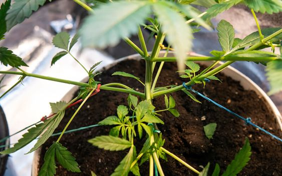Costo del equipo
En exteriores, el costo inicial generalmente es menor que en interiores: no se necesitan luces de cultivo ni electricidad, solo tierra y luz solar. Sin embargo, lo difícil de cultivar en exteriores es encontrar un buen lugar que sea privado, conveniente para ti, con fácil acceso a agua y más de 8 horas de luz solar directa todos los días.
Exteriores: Gratis - 200/300 USD
En interiores, el costo depende de la configuración y lo que estés buscando. Si solo quieres cosechar una onza de vez en cuando, puede costar muy poco comenzar, incluso solo $100 (echa un vistazo a los "space buckets").
Para una configuración interior premium con una tienda de cultivo, luces de cultivo, ventilador y suministros de cultivo, tendrás que gastar entre $800 - $1500 para cultivar algunas plantas. Una configuración como esta puede producir varias onzas e incluso una libra de cogollos en la cosecha.
Interiores: $100 - $1500+/p>
Configuración y suministros
En esta sección, explicaremos lo que debes hacer para prepararte para comenzar a cultivar cannabis.
Elegi tu lugar para empezar a cultivar !
Cultivando en Interiores vs Exteriores
Hay muchas consideraciones a tener en cuenta al decidir si cultivar su planta en interiores o exteriores.
Como alguien que vive en las afueras de una ciudad, con muchos vecinos cercanos y lejos de cualquier área silvestre, solo cultivo marihuana en interiores.
La mayoría de los cultivadores de cannabis tienen una idea de si quieren cultivar en interiores o exteriores, pero revise esta lista de pros y contras para ayudar si aún no está seguro.
En Interiores :
Tiene más control sobre todo en un entorno de cultivo en interiores, lo que significa que los cultivadores en interiores pueden producir cogollos densos de forma consistente, pero también tienen más responsabilidad. Si no proporciona todo lo que sus plantas necesitan, morirán.
¿Qué espacio interior funciona mejor?
Puede cultivar cannabis en la mayoría de los lugares con fácil acceso al agua y al aire fresco...
Creo que las tiendas de cultivo son el mejor espacio de cultivo para los nuevos cultivadores de cannabis. Solo necesita decidir qué tamaño de tienda de cultivo debe obtener para su espacio, y ya le ha dado a su planta mucho para mejorar su entorno para un mejor crecimiento. Las tiendas de cultivo son baratas, efectivas y le ahorrarán muchos problemas. Una tienda de cultivo de calidad es a prueba de luz, tiene paredes reflectantes, contiene opciones incorporadas para ventilar el calor, un lugar para colgar sus luces y pisos impermeables para derrames (para que nunca termine con agua en su piso). Una buena tienda de cultivo no siempre parece una tienda de cultivo para alguien que no sabe cómo se ve (alguien me preguntó si mi tienda de cultivo era donde colgaba mi ropa), pero contiene muchas características que ayudarán a su planta de cannabis a prosperar mientras reduce su trabajo. A menudo, es menos costoso obtener una tienda de cultivo de calidad que intentar hacer su propio espacio o caja de cultivo efectiva.
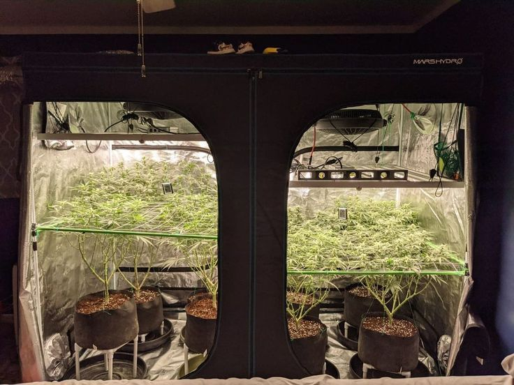 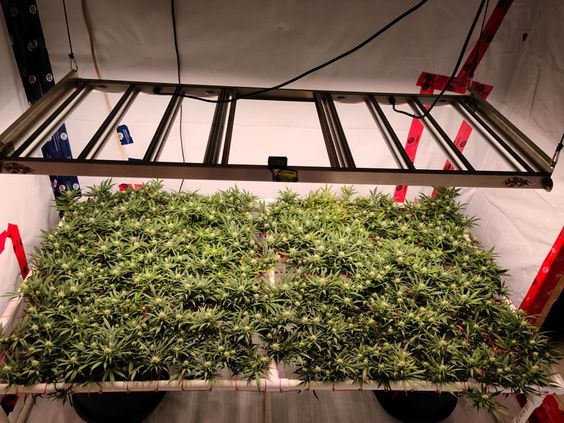Cuando piensas en dónde cultivar en interiores, también debes considerar la temperatura de tu espacio de cultivo (¡y recuerda que tus temperaturas probablemente aumentarán una vez que tengas tus luces de cultivo encendidas!).
Las plantas jóvenes de cannabis crecen más rápido cuando las temperaturas son un poco más cálidas, en el rango de 70-85°F (20-30°C).
La temperatura es importante para cultivar cannabis. Cuando las plantas son un poco mayores, en la etapa de floración, es mejor mantener las temperaturas ligeramente más frescas, alrededor de 65-80°F (18-26°C) para producir cogollos con el mejor color, producción de tricomas y aroma.
Debido a que las temperaturas son tan importantes, es mejor poder tener cierto control sobre la temperatura de tu área de cultivo. Cuando cultivas en interiores, tus luces de cultivo generarán calor. Cuanto más potentes sean tus luces, generalmente más calor generarán.
Si estás cultivando solo unas pocas plantas en una tienda o caja de cultivo, generalmente puedes instalar un ventilador para eliminar el aire caliente de las luces y sacarlo por una ventana para mantener las cosas lo suficientemente frescas.
Exterior
El cultivo de cannabis en exteriores es más barato para empezar, ya que probablemente no tengas que adquirir luces de crecimiento ni crear un área de cultivo interior, aunque debes preocuparte por la privacidad/discreción, la posible polinización, el robo de tus plantas, los insectos, los ciervos y otros visitantes inesperados al aire libre.
Si eliges la cepa adecuada y vives en un buen ambiente, es probable que te resulte más barato cultivar al aire libre, ya que no tienes que proporcionar tanto para tus plantas. El sol y la madre naturaleza harán mucho del trabajo por ti.
Y cuando cultivas al aire libre, puedes producir plantas como esta ...
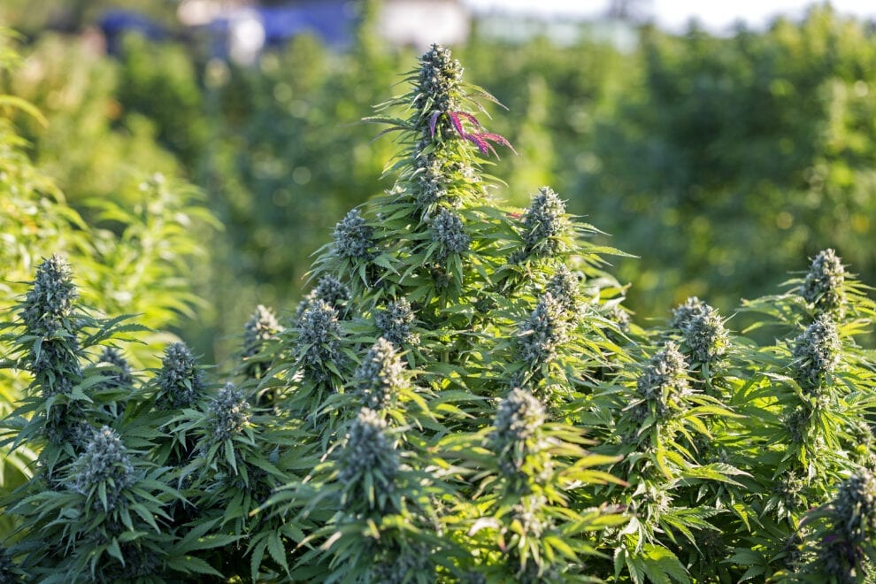Por supuesto, cuando cultivas al aire libre, no siempre es posible controlar el entorno perfectamente. Si está seco, necesitarás regar tus plantas. Si está demasiado lluvioso, necesitas proteger tus plantas de un exceso de agua.
Cuando se trata de temperaturas, una buena regla general sobre las plantas de cannabis es que si hace demasiado calor para ti, probablemente también sea demasiado caliente para tus plantas. Y al igual que los humanos, las plantas de cannabis pueden morir si se exponen a temperaturas congelantes.
Por lo tanto, si sabes que va a hacer extremadamente calor o frío donde vives, es posible que debas tomar medidas adicionales para proteger tus plantas de los elementos, como configurar un pequeño invernadero.
Elige el medio de cultivo
Muchos nuevos cultivadores piensan inmediatamente en cultivar cannabis en tierra.
La tierra es el medio de cultivo con el que la mayoría de las personas están familiarizadas y es uno de los métodos de cultivo más comunes, pero no es el único.
Medios de cultivo comunes para cannabis
Puedes cultivar con éxito plantas de cannabis en tierra y otros tipos de medios sin tierra, o incluso puedes cultivar tus plantas directamente en agua o en aire húmedo.
Cada medio de cultivo que uses tendrá diferentes requisitos de cuidado y riego. Hablaré sobre algunas de las diferentes opciones para ayudarte a elegir el medio de cultivo adecuado para tu área de cultivo y nivel de experiencia.
¡Lo más importante es elegir un medio de cultivo que te entusiasme!
¿Es tu primer cultivo de cannabis?
Si es tu primer cultivo, estos son los medios mas recomendados
Si es tu primer cultivo de cannabis y nunca has cultivado o jardinado, no te preocupes. Tal vez tengas un "pulgar negro" y todas las plantas que has tenido han muerto.
Eso es exactamente lo que me pasaba antes de empezar a cultivar. Logré matar todas las plantas que llegaron a mi posesión, incluso cuando lo estaba intentando. De alguna manera, incluso logré destruir las plantas de otras personas, con un riego accidental excesivo o insuficiente. A veces parecía que solo tenía que mirar una planta de manera equivocada y se secaba y moría.
Incluso si nunca has cultivado ninguna planta antes (como yo), puedes cultivar cannabis con éxito. Este sitio web te enseñará todo lo que necesitas saber para pasar fácilmente por tu primera cosecha.
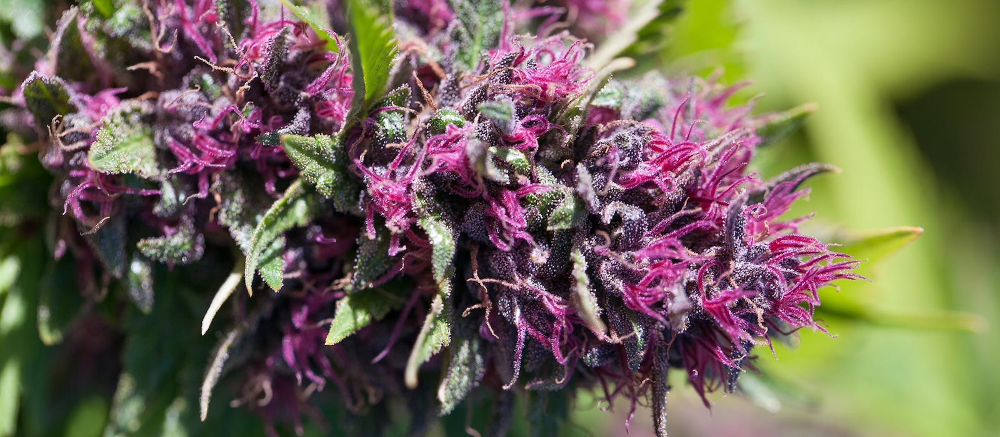Ya tienes lo necesario para cultivar cannabis siempre y cuando estés dispuesto a seguir las instrucciones paso a paso que se proporcionan aquí sobre cómo cultivar marihuana, casi como seguir una "receta" de cultivo de cannabis.
Las plantas de cannabis son malezas en la naturaleza. Todo lo que tus plantas necesitan son las condiciones adecuadas, y crecerán y producirán hermosas flores que puedes cosechar y secar para obtener un suministro ilimitado de cogollos.
Como cultivador, puedes darle a tus plantas un ambiente mejor del que jamás obtendrían en la naturaleza, y tus plantas te recompensarán con una cosecha abundante de flores.
Lo más importante es elegir un medio de cultivo que te entusiasme. ¡No tengas miedo de probar el medio de cultivo que realmente deseas, incluso si parece que puede ser demasiado complicado! Todos los medios de cultivo tienen sus ventajas y desventajas, pero todos son sencillos una vez que tienes la información necesaria para proporcionar un ambiente de cultivo perfecto. ¡Sí, incluso la hidroponía!
Primer cultivo, ya tienes experiencia con el suelo o jardinería
Medios de cultivo recomendados (¡confía en tu instinto!)
Si ya has cultivado en suelo antes, la hidroponía puede que no te interese a menos que estés realmente interesado (en cuyo caso, te guiaremos). Echa un vistazo a un diario de cultivo hidropónico de alto rendimiento de mi compañero cultivador Sirius para ver si la hidroponía podría interesarte.
Generalmente, la mayoría de los cultivadores que han cultivado en suelo tienden a ir con suelo o sin suelo. Al cultivar en suelo, el cannabis obtendrá nutrientes del suelo mismo. También puedes proporcionar nutrientes adicionales en tu agua. Con el coco coir, siempre proporcionas los nutrientes en el agua. Aparte de eso, los dos métodos son similares entre sí. El suelo es conocido por tener un mejor sabor, mientras que el sin suelo (particularmente el coco coir) es conocido por un crecimiento más rápido, mayores rendimientos y gran potencia.
¿Ya sabes cuál medio de cultivo de cannabis quieres?
Suelo (Soil)
Simplemente coloca la semilla en el suelo y listo. Elige una buena tierra para cultivar cannabis y estarás listo para empezar.
El suelo compostado es ideal para el cultivo de cannabis.
Si estás seguro de que quieres cultivar en tierra, ¡hazlo! La tierra es una excelente manera de cultivar cannabis y existen muchos tipos diferentes de suelo para el cultivo. Para aquellos que quieren algo simple y rápido para empezar, pueden utilizar tierra para macetas de alta calidad y nutrientes especialmente diseñados para el suelo para darle a sus plantas exactamente lo que necesitan hasta la cosecha. También puedes hacer tu propio suelo súper compostado, que es una forma relativamente avanzada de cultivar y puede resultar intimidante para nuevos cultivadores que nunca hayan cultivado en tierra.
Algunos cultivadores afirman que cultivar cannabis en tierra produce los cogollos con mejor sabor y aroma.
Pautas generales para un buen suelo para cannabis:
Marcas de tierras recomendadas :
Sin tierra
¡Obtén tus nutrientes, planta tu semilla y comienza a regar! Obtén la misma experiencia que cultivando cannabis en tierra con nutrientes, excepto que experimentarás un crecimiento más rápido y rendimientos más grandes.
Las plantas de cannabis cultivadas en coco coir. El cultivo sin tierra utiliza un medio inerte como coco coir, perlita, vermiculita, etc., para cultivar plantas de cannabis.
Estos medios de cultivo no tienen ningún nutriente, en cambio, riegas las plantas a mano como lo harías en tierra y les proporcionas todos los nutrientes en el agua. Una de las desventajas es que hay menos "almohadilla" con los medios de cultivo sin tierra que con la tierra, que contiene nutrientes propios.
El cultivo sin tierra es muy parecido al cultivo en tierra con nutrientes añadidos. Proporciona algunos de los beneficios tanto del cultivo sin tierra como del hidropónico. Muchos cultivadores encuentran que el cultivo sin tierra es tan intuitivo como la tierra, ya que ambos métodos de cultivo parecen estar cerca de lo que observamos naturalmente en la naturaleza.
Con nutrientes especialmente elaborados, la experiencia de cultivo sin tierra puede ser igual que el cultivo en tierra, pero los cultivadores exitosos sin tierra serán recompensados con un crecimiento más rápido y rendimientos más grandes.
Algunos posibles medios de cultivo sin tierra para el cannabis son:
La perlita se usa ocasionalmente sola como medio de cultivo, pero la mayoría de las veces se mezcla con otra cosa para obtener un mejor drenaje y una mayor oxigenación de las raíces. La perlita suele parecer pequeñas piedras blancas, pero cada pieza pesa muy poco. Casi me recuerda a las palomitas de maíz. La perlita está hecha de un tipo de vidrio volcánico "hinflado" y no puede retener mucha agua. Muchos cultivadores mezclan perlita con sus medios de cultivo sin tierra o tierra para agregar aire y drenaje, y algunos cultivadores usan perlita como mecha para sistemas de mecha.
Si bien se puede hacer, el cultivo de cannabis solo en perlita es raro. Es difícil hacer que la perlita retenga suficiente agua y otros medios de cultivo son mucho más fáciles de usar. Pero la perlita a menudo se mezcla con otros medios o tierra para cultivar cannabis.
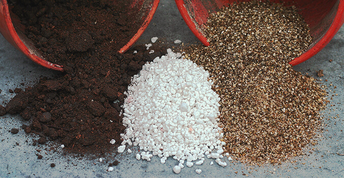Haz tu propia mezcla de sustrato sin suelo para cannabis
A veces el coco coir ya está fragmentado y listo para plantar (los paquetes de mezclas para macetas de coco incluyen Canna Coco Coir). Pero la mayoría de las veces el coco coir viene en ladrillos. Todo el coco coir debe enjuagarse bien antes de comenzar el cultivo (aunque algunos paquetes indiquen que el coco ha sido lavado y ajustado al pH). Los ladrillos de coco en particular necesitan ser enjuagados bien para eliminar la sal adicional. Los ladrillos suelen ser mucho más baratos que los paquetes de coco para macetas porque cada ladrillo es más fácil y ligero de transportar, y se agrega agua en casa. Asegúrate de dejar un ladrillo de coco coir en agua durante al menos una hora primero; de esta manera sabrás que está completamente expandido antes de comenzar a enjuagar.
Una vez que hayas expandido y enjuagado completamente tu coco coir, debería romperse fácilmente en una consistencia similar a la de la tierra rica y oscura. En este punto, mezcla tu coco con perlita; usa más perlita en un ambiente húmedo y menos en un ambiente muy seco. Una vez que hayas mezclado tu coco y perlita, ¡estás listo para empezar!
El coco coir se ha vuelto tan popular como medio de cultivo para cannabis que ahora hay muchas marcas de nutrientes especializados para esa combinación exacta.
¿Qué contenedor debería usar para sostener mi medio de cultivo?
Todos los contenedores para cultivar cannabis necesitan tener agujeros de drenaje para que el agua pueda drenar por debajo. Los contenedores más profundos son mejores que los más superficiales: las raíces tienden a crecer hacia abajo y pueden quedar atrapadas en un contenedor demasiado superficial o pequeño.
¡Consigue un contenedor que proporcione suficiente oxígeno a las raíces para un crecimiento más rápido!
Contenedores recomendados para el cultivo de cannabis:
Las macetas de tela son excelentes para cultivar cannabis
Hay marcas populares de macetas de tela como "Smart Pot", pero también puedes hacer tu propia maceta de tela en casa. Lo genial de estos contenedores es que proporcionan más aire y oxígeno a las raíces, lo que fomenta un crecimiento más rápido.
¿Qué tamaño de maceta debo usar?
Cuando se cultivan plantas de cannabis en un contenedor, debes elegir el tamaño de la maceta.
Una guía general es tener alrededor de 2 galones por cada 12 "de altura. Esto no es perfecto, ya que las plantas a menudo crecen de manera diferente, pero esta es una buena regla general.
Cuando tengas dudas, elige un tamaño de contenedor final más grande en lugar de uno más pequeño. Las plantas que están limitadas por las raíces debido a estar en un contenedor demasiado pequeño crecerán más lentamente y serán propensas a problemas.
No es bueno transferir las plantas durante la etapa de floración, por lo que deseas tener tus plantas de cannabis en su contenedor final al menos 2 semanas antes del comienzo de la floración.
Contenedor final para el tamaño deseado de la planta: guía general
Hidroponia